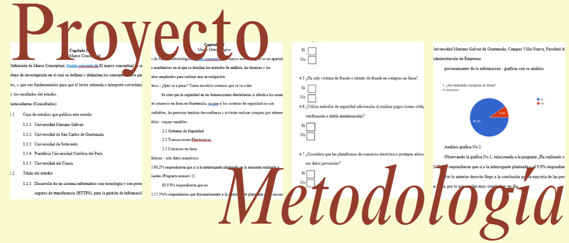
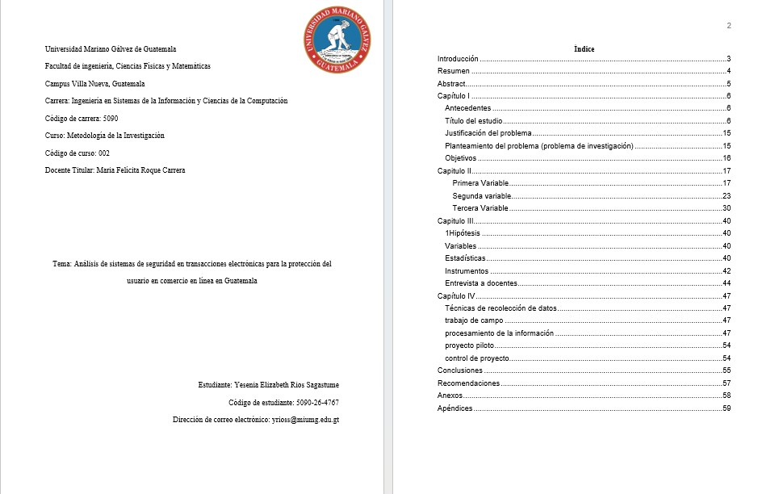

Proyecto de Tesis
Se trata de un proyecto individual en el que cada estudiante debe elaborar una tesis que incluya todos sus componentes, especialmente los cuatro marcos: conceptual, teórico, metodológico y operativo. En este proceso, es necesario definir cada uno de estos marcos y desarrollar el contenido correspondiente en cada sección. La licenciada guía el trabajo en cada clase, indicando los pasos que se deben seguir.
Una vez finalizada la tesis individual, se continúa con una etapa grupal, en la que se forman equipos de cinco integrantes. Como parte final del proyecto, cada grupo deberá realizar una exposición de aproximadamente 15 minutos en una clase de otra carrera, donde presentarán su tesis.
El objetivo es desarrollar una tesis de investigación mediante la elaboración de marcos conceptuales, teóricos, metodológicos y operativos, aplicando técnicas de investigación como encuestas y entrevistas, con el fin de analizar la información obtenida sobre las compras en línea y presentar conclusiones y recomendaciones basadas en los resultados.
En este proyecto elaboré una tesis de investigación. Primero realicé la estructura del documento en Word, incluyendo carátula, introducción, índice, resumen, abstract, marco teórico, marco conceptual, marco metodológico, marco operativo, conclusiones, anexos y apéndices.
Después desarrollé el marco conceptual, donde coloqué los antecedentes e investigaciones relacionadas con el tema. Luego trabajé el marco teórico, definiendo las variables del título e incluyendo historia, ventajas, desventajas y personajes que aportaron información importante a dichos temas.
En el marco metodológico elaboré la hipótesis y realicé encuestas y entrevistas para obtener información.

